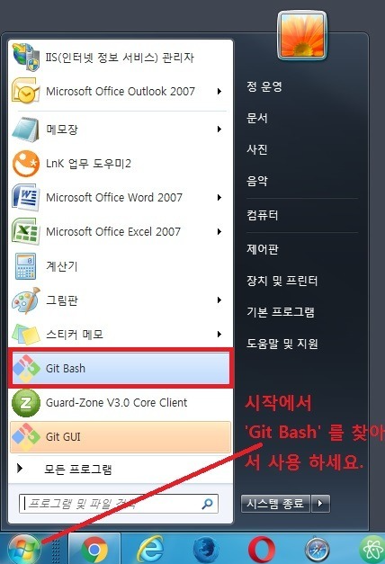
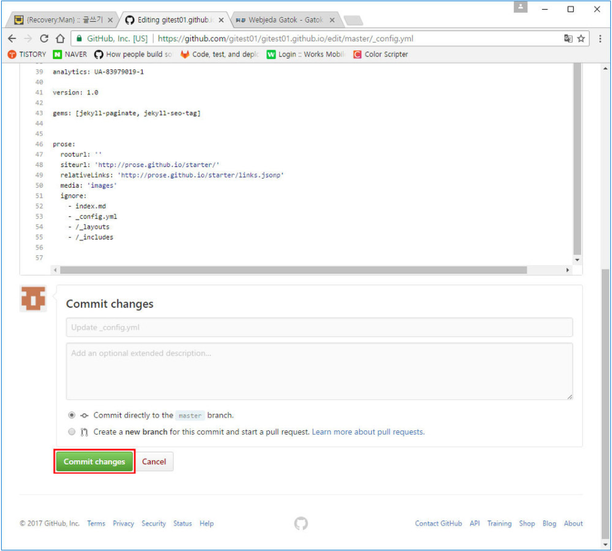

블로그 만들기
일단 먼저 깃을 설치합니다.
윈도우든 맥이든 https://git-scm.com/ 여기 들어가서 다운 받고 설치를 진행합니다.
※ 깃허브에 가입이 되어있다는 전제하에 진행하겠습니다.
포스팅은 윈도우 기준으로 진행하겠습니다.
1.윈도우 10이라면 이렇게 하세요.

2. 깃을 깔고 Git Bash 를 실행하면 가장 먼저 해야할 일은 사용자 등록입니다. 한줄씩 입력하고 엔터 눌러 주세요!
git config --global user.name "깃허브네임"
git config --global user.email "깃허브이메일"
3. 그리고 https://github.com/ 으로 접속합니다. 그러면 새로운 프로젝트를 시작하거나 또는 기존에 프로젝트를 가지고 있다면 그 리스트 들이 나옵니다.
여기서 중요한 포인트는 '로그인을 했다' 라는것입니다. 넵! 로그인 하려고 깃허브 사이트 접속한거 맞습니다!
4. 이제 구글링을 할꺼에요!
웹 브라우저에 새 탭을 열고 http://google.com/ 에서 다음과 같이 입력합니다. '지킬 테마'
그리고 저기 아래 http://jekyllthemes.org/ 주소로 되어있는 부분으로 들어갑니다.
5. 아무거나 맘에 드는 테마를 고르세요!
저는 7번 테마가 맘에 들었습니다.
6. 맘에드는 테마를 골랐다면 클릭해서 들어가 봅니다.
라이선스 한번 확인해 봅니다. MIT 라이선스인지!
확인했다면 'Homepage' 버튼을 클릭!
7. 좌측 상단의 'fork'버튼을 누릅니다.
fork는 지금 열린 이 페이지의 저장소를 본인의 저장소로 복제합니다.
그러면 잠깐 이런 페이지가 나옵니다. 몇초 기다리면 복제가 완료 됩니다.
8. 그러면 이제 본인의 닉으로 저장소가 생성이 된걸 확인할 수 있습니다.
이 부분은 클릭하지 마세요. 여기선 본인의 닉네임을 확인하는게 목적입니다.
9. 바로 아래 메뉴들이 쭉 있습니다. 이중에서 'Settings' 를 클릭합니다.

10. 다음과 같이 변경합니다.
닉네임을 Repository name에 똑같이 적은 뒤
닉네임.github.io
이렇게 입력합니다. 도메인은 꼭 이렇게 하셔야 합니다.
원하시는 도메인 명이 있다면 그건 도메인을 사셔야 합니다.
그리고 바로 우측의 'Rename' 버튼을 눌러줍니다.
11. 여기서 부터는 사람마다 조금씩 다를 수 있습니다.
테마가 바로 적용이 될 경우도 있고 시간이 지나야 적용이 될 경우도 있습니다.
저는 한 5분안쪽의 시간이 걸려 테마가 적용되었습니다.
이 부분은 'Settins' 를 눌러서 나온 화면에서 스크롤을 조금 내려야 합니다.
이렇게 GitHub Pages 에서 초록색으로 경로가 나올 경우 블로그 개설이 완료 됬다는 증거입니다.
※ 이 부분에서 이렇게 진행이 안될경우 위에서 네임을 경로 적지 않고 아무렇게 넣은다음 Rename 버튼을 누르세요.
그리고 다시 닉네임.github,io 로 바꾸면 바로 반영이 되어있는 경우도 있습니다.

12. 한번 접속해 보겠습니다.
CSS, JS가 전부 깨졌네요. ㅠㅠ 이런건 간단한 경로수정으로 바꿀 수 있습니다.
경로 수정하기
이렇게 테마를 fork받아서 사용하시게 된다면 생각했던거와 경로가 다를 수 있습니다.
제대로된 경로를 설정해 주기 위해서 자신의 깃허브 사이트에서 개발자 도구를 열어봅니다.
다음 사진을 봤더니 에러가 다섯개나 떠있습니다.
2. 대략 여기서 가장 파악이 간단하다고 생각되는 css가 어떠한 경로로 잡혀져 있는지 살펴보게 된다면 다음과 같습니다.
/gatok/css/bootstrap.css
이러한 경로로 잡혀져 있네요. 그럼 일단 github의 본인 저장소에서는 어떤 경로로 잡혀져 있는지 확인해 봅니다.
3. 본인의 깃허브를 보시는 방법은 아시리라 생각합니다.
https://github.com/자신의네임/자신의네임.github.io
css 폴더를 클릭해서 들어가 보겠습니다.
4. /css 로 되어있습니다.
상위 폴더에선 gatok 라는 폴더를 찾을 수 없습니다. 찾을 수 없다는게 문제가 아니라 css 상위 폴더는 root입니다.
경로를 어떻게 설정해야 할까요?
gatok 폴더가 없다는 생각을 하고서 진행합니다.
/gatok/css/bootstrap.css -> /css/bootstrap.css 가 됩니다.
4. 보통 모든 수정은 어디서 일어나는지 확인하기 위해 다시 상위 tree 를 보면 _config.yml 이라는 파일이 보입니다.
_config.yml 는 지킬로 만들어진 깃허브 블로그의 환경설정 옵션을 담아둡니다.
여러분이 다운 받으신 테마의 종류에 따라 _config.yml 에 어떠한 옵션들이 달려져 있는지 전부 다릅니다.
하지만 그 옵션은 다 이미 정해진 규칙이 있으며, 그 규칙은 지킬 한글번역 사이트에서 확인이 가능합니다.
http://jekyllrb-ko.github.io/docs/configuration/
5. _config.yml 파일을 열어본다면 이러한 내용들이 있습니다.
하나씩 살펴보기엔 바꿔줘야할 내용들이 너무나 많네요.
여기서 가장 급한 CSS, JS를 제대로 불러올 수 있게 경로를 만져주는게 첫번째 라고 생각합니다.
baseurl: XXX
사진에서 붉은색으로 표시해 둔게 보이실 꺼예요. 이 부분을 수정하셔야 합니다.
이 부분은 여기에 작성된 URL로 웹사이트를 작동시킨다 라는 옵션입니다. 모든것이 /gatok 가 꼭 들어가게 되죠.
하지만 저희는 gatok 폴더가 없으니 /gatok 이라는 글자만 지워주시면 됩니다. (물론 저와 같은 템플릿을 선택하신 분들에 한해서)
6. 수정을 위해선 우측 상단의 연필모양 아이콘을 클릭하시면 수정을 진행할 수 있습니다.
7. 아이콘을 눌렀다면 현재 보고있는 _config.yml 파일을 수정할 수 있게 됩니다.
다음 사진처럼 경로를 요렇게 바꿔주기만 하면 됩니다. 빈 공란을 남겨 두기만 하면됩니다.
저는 / 하나만 남겨두면 될줄 알았는데 /를 남겨두게 되면 경로가 //css/~~~ 이렇게 들어가네요. 그냥 /도 지워주셔야 합니다.
후에 다시 _config.yml을 변경해야 할 일이 생긴다면 branch를 master로 바꿔주셔야 수정 아이콘이 활성화 됩니다.
8. 스크롤을 조금 내리면 Commit changes 라는 버튼이 보입니다.
보통은 무조건 커밋메시지를 입력하시는게 좋습니다. 규칙을 정하고 언제 어떤파일 수정했는지 알아보기 쉽게 작성하시는게 좋습니다.
하지만 이건 일단 초보자도 초간단하게 깃허브 블로그 만드는 방법이라 규칙같은거 보단 아웃풋에 집중하겠습니다.

10. 이 부분만 변경하면 이렇게 블로그가 제모습을 하고 있는게 보입니다.
이제 이렇게 블로그를 개설했으니 블로그에 글을 남기는 방법을 알아야 하겠죠?
블로그에 글을 남기는 방식은 md 파일로 블로그에 글을 쓰게 됩니다.
md 파일은 MarkDown의 약자라고 생각하시고 마크다운 문법으로 글을 쓰게 됩니다.
아주 간단합니다. 그리고 그건 3부에서 다뤄보겠습니다.
블로그 작성하기
이제 블로그에 글을 한번 써보겠습니다.
그러기 위해서 저희가 처음에 준비했었던 그리고 이제야 사용하게 되는 깃을 써보려 합니다.
1부에서 잠깐 언급했던 'Git Bash'를 실행시킵니다.
1. 자 일단... 제 컴퓨터 기준으로 저는 컴퓨터에 드라이브가 2개 있습니다.
C드라이브, D드라이브가 있죠.
저는 D드라이브에서 제 깃허브 블로그를 관리하려 합니다.
그리고 깃허브에 올라가 있는 블로그관련 파일을 모두 다운받으려 합니다.
그러기 위해서 다음과 같은 명령어를 입력합니다.
cd d:/
git clone http://github.com/닉네임/저장소이름
2. 제대로 다운로드를 받았다면 D드라이브를 확인해 보겠습니다.
깃허브 와 정말 똑같습니다.
그리고 저희들이 글을 써야하는 폴더는 _posts 입니다.
그 폴더를 열어봅니다.
3. 글을 쓸때에는 파일 이름을 정해진 규칙대로 만들어야 합니다.
YYYY-MM-DD-제목.md
뒤의 .md 는 파일 확장자 입니다. 파일을 만들때엔 반드시 .md 파일로 만들어야 합니다.
그렇다면 다운 받은 폴더째로 텍스트 에디터에 옮겨 넣어 포스팅을 작성해 보겠습니다.
4. 포스팅을 시작하기에 앞서 기존의 문서들을 확인해 봤습니다.
그랬더니 모든 문서에는 동일한 규칙이 존재했습니다.
1~4번 라인까지는 반드시 들어가는 것이 존재합니다.
---
layout: post
title: "문서_제목"
---
이 부분을 복사해서 새로운 파일을 만들어 보겠습니다.
5. 새로운 파일을 작성하고 세이브 했습니다.
물론 세이브만 했다고 해서 블로그에 글이 써지는건 아닙니다.
이걸 깃허브에 업로드 해야 보입니다. 이 글이 보여질 수 있게 만들어 보겠습니다.
6. 빨간 줄이 그어진 순서대로
cd 닉네임.github.io
D드라이브 에 있는 방금 다운로드 받았던 자신의 깃허브 저장소로 이동합니다.
git status
파일의 상태를 확인합니다. 새로 만들어진 파일이 있거나 수정된 파일이 있거나 삭제된 파일이 있을 경우 하단에 붉은색 글자로 그 파일의 상태를 보여줍니다.
git add *
새로만들어진 파일을 커밋할 수 있게 바꿔줍니다.
git status
다시 상태를 확인해 봤습니다. 새로 만들어진 파일이 있고 그 파일이 커밋될 수 있다는 의미로 초록색으로 표시된걸 확인했습니다.
7. 이제 커밋을 하고 호스팅에 올릴텐데 다음의 명령어를 입력해 봅니다.
붉은 선이 있는 순서대로
git commit -m "커밋메시지"
커밋 을 하고 커밋 메시지를 입력합니다. 메시지는 꼭 입력해야 합니다.
git status
현재 수정되거나 삭제되거나 새로 만들어진 파일이 있는지 없는지 확인해 봅니다.
git remote -v
현재 리모트 저장소를 확인하기 위해 명령어를 입력해봤습니다. 정확히 제 깃허브 저장소를 가르키고 있네요.
git push
이 명령어를 입력하면 이제 깃허브 블로그에 작성했던 글이 보이게 됩니다. 깃허브 저장소에 커밋된 파일들을 밀어넣습니다.
8. git push 명령을 입력하면 다음과 같은 창이 뜹니다.
깃허브 아이디와 암호를 넣고 로그인 합니다.
때에 따라선 Git Bash 창에 암호만 입력하라고 뜰 경우도 있습니다.
9. 그러면 이렇게 push 명령어가 진행 됩니다.
그럼 정말로 깃허브 블로그에 글이 올라가 있는지 확인해 보겠습니다.
10. 오 제대로 등록이 됐습니다!